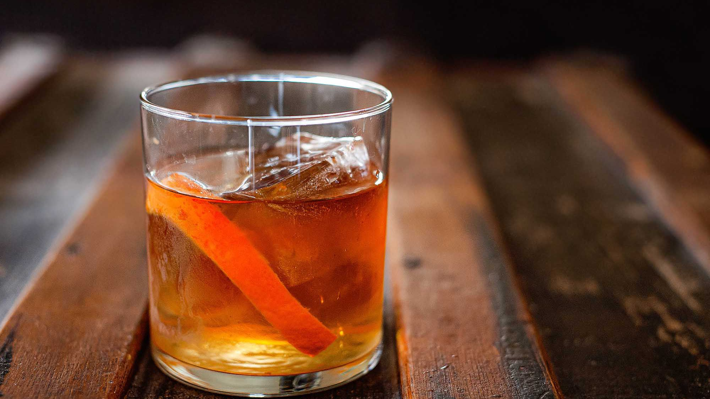

Old Fashioned

Description
"One of the most venerable of whiskey-based cocktails, the old-fashioned has a history that stretches back farther than the martini’s. For decades it has suffered under the reputation of something your grandmother drank — overly sweet, fruit-laden and spritzed-up. But grandma wouldn’t recognize what’s happened to it lately." —Robert Simonson
Ingredients
- 1 teaspoon Demerara sugar
- 2 ounces rye whiskey
- ice cube, preferably circular
- 1 or 2 dashes of Angostura bitters
- 1 or 2 dashes of orange bitters
- 1 strip lemon peel
Steps
- Spoon sugar into a shaker and add about a teaspoon of very hot water for a simple syrup. Stir until dissolved, adding a little more water if needed.
- Add whiskey and bitters, and stir again.
- Add several ice cubes and stir well to chill.
- Strain into an old-fashioned glass, add 2 or 3 big ice cubes, twist lemon peel over the top and drop it in.